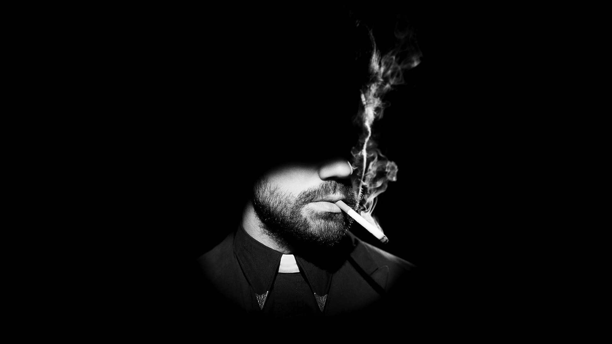

Jesse Custer: The Preacher
La historia de un predicador poco convencional
Por Alejandro Boullaude
Jesse es el reverendo en una iglesia de un pequeño pueblo al sur de los Estados Unidos que heredo de su padre. Súbitamente, mientras da una misa un domingo, una poderosísima entidad divina llamada Génesis entra como un meteorito en la iglesia y se fusiona con Jesse, calcinando a todos los presentes salvo al protagonista. Dicha fusión otorga a Jesse el poder de usar su palabra como si de la palabra de Dios se tratara, haciendo que todos los que la oigan obedezcan ciegamente lo que él ordene. Con este poder, el protagonista emprende un viaje de autodescubrimiento y venganza por Estados Unidos, con el objetivo de encontrar a Dios y exigirle una explicación de por qué ha abandonado a su mayor creación, el ser humano.
Amigos y Enemigos
En su aventura le acompañarán Tulip O’Hare, su novia experta en el manejo de armas de fuego, y Cassidy Proinsias, un vampiro irlandés muy dado a la bebida. Jesse, en su camino, se cruza con varios personajes, entre ellos su esperpéntica familia, el “Santo de los Asesinos”, un asesino que viene desde el infierno para destruir genesis y una poderosa organización militar y secreta llamada El Grial. Dicha organización secreta es religiosa, quiere usar al protagonista para posisionarlo como el nuevo dios y así obtener control global de la poblacion del planeta.
Preacher es una serie oscura, graciosa y extraña, en el mejor sentido posible
Boston Globe
Preacher es una serie oscura, graciosa y extraña, en el mejor sentido posible
Boston Globe
Caracteristicas
Jesse Custer es un catolico devoto, con una moral firme y a su vez no duda en recurrir a metodos violentos en casi cualquier situación que se le cruza. Desde pequeño fue entrenado en combate y torurado por su familia materna L’angelle, por lo que su uso de armas de fuego y combate cuerpo a cuerpo es destacable. Por su moral, inculcada por su padre, no hace un uso exesivo e irresponsable de “Genesis”, aunque en ocasiones no mide los limites de su poder.